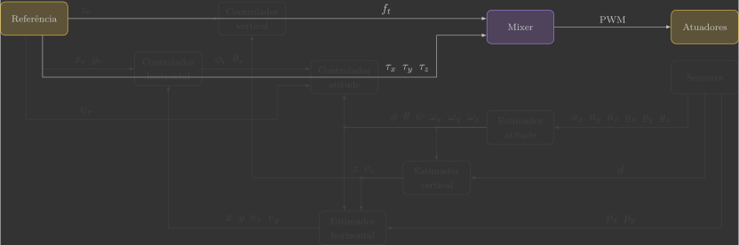
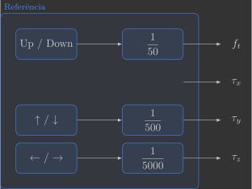

Mixer
Nesta secção você irá implementar o mixer, que converte as forças e torques totais produzidos pelas hélices \(f_t\), \(\tau_x\), \(\tau_y\) e \(\tau_z\) nos sinais PWM correspondentes dos motores.

Para isto, serão implementadas três funções:
reference()mixer()actuators()
Implementação
Para começar, crie um arquivo chamado mixer.c dentro da pasta src/control.
Esse arquivo será dividido em três grandes blocos, conforme mostrado abaixo:
/* === Definitions ======================================================= */
/* === Functions ========================================================= */
/* === Main Loop ========================================================= */
Definições
Bibliotecas necessárias
Logo no início desse arquivo, importe todas(1) as bibliotecas que serão utilizadas:
- Algumas dessas bibliotecas não são estritamente necessárias para o mixer, mas já as incluímos agora para evitar preocupações futuras ao integrar os próximos módulos.
#include "math.h" // Math functions (e.g., sqrtf, roundf, powf)
#include "FreeRTOS.h" // FreeRTOS core definitions (needed for task handling and timing)
#include "task.h" // FreeRTOS task functions (e.g., vTaskDelay)
#include "supervisor.h" // Functions to check flight status (e.g., supervisorIsArmed)
#include "commander.h" // Access to commanded setpoints (e.g., commanderGetSetpoint)
#include "estimator.h" // Estimation framework for sensor fusion
#include "motors.h" // Low-level motor control interface (e.g., motorsSetRatio)
#include "debug.h" // Debug printing functions (e.g., DEBUG_PRINT)
#include "log.h" // Logging utilities to send data to the CFClient
Parâmetros e constantes
Na sequência, declare(1) algumas constantes físicas e parâmetros do quadricoptero que serão bastante utilizados:
- Usamos
constpara garantir que o valor não muda em tempo de execução. Já ostaticlimita a visibilidade da variável ao arquivo atual, evitando conflitos de nomes em outros arquivos. Assim,static constcria constantes imutáveis e restritas ao arquivo.
// Physical constants
static const float pi = 3.1416f; // Mathematical constant
static const float g = 9.81f; // Gravitational acceleration [m/s^2]
static const float dt = 0.005f; // Loop time step [s] (5 ms -> 200 Hz)
// Quadcopter parameters
static const float l = 35.0e-3f; // Distance from motor to quadcopter center of mass [m]
static const float m = 38.6e-3f; // Mass [kg]
static const float Ixx = 20.0e-6f; // Moment of inertia around x-axis [kg.m^2]
static const float Iyy = 20.0e-6f; // Moment of inertia around y-axis [kg.m^2]
static const float Izz = 40.0e-6f; // Moment of inertia around z-axis [kg.m^2]
Variáveis globais
Em seguida, declare como variáveis globais as variáveis que entram e saem da função do mixer.
// Actuators
float pwm1, pwm2, pwm3, pwm4; // Motors PWM
// System inputs
float ft; // Thrust force [N]
float tx, ty, tz; // Roll, pitch and yaw torques [N.m]
Funções
Referência
Inicialmente, as forças e torques serão comandados pelo Command Based Flight Control do Crazyflie Client.

- Os botões
↑/↓alteram a variávelsetpoint.position.xem incrementos de \(0,5\) - Os botões
←/→alteram a variávelsetpoint.position.yem incrementos de \(0,5\) - Os botões
Up/Downalteram a variávelsetpoint.position.zem incrementos de \(0,5\)
Vamos utilizar essas variáveis para comandar a força total \(f_t\) em incrementos de \(0,01\,N\) e os torques de rolagem \(\tau_x\) e inclinação \(\tau_y\) em incrementos de \(0,001\,N.m\). Portanto, precisamos ajustar as escalas da seguinte forma(1):
- O torque \(\tau_x\) possui uma inversão de sinal pois o eixo \(y\), que é comandado pelos botões
←e→, está no sentido contrário do torque.

Abaixo temos um exemplo de função reference() que faz isso(1):
- Multiplicamos por \(2\), arredondamos e depois dividmos por \(100\) (ou \(1000\)) para garantir um arredondamento com \(2\) (ou \(3\)) casas decimais.
// Get reference setpoints from commander module
void reference()
{
// Declare variables that store the most recent setpoint and state from commander
static setpoint_t setpoint;
static state_t state;
// Retrieve the current commanded setpoints and state from commander module
commanderGetSetpoint(&setpoint, &state);
// Extract position references from the received setpoint
ft = roundf((setpoint.position.z) * 2.0f) / 100.0f; // Thrust force command [N] (maps 0.5m -> 0.01N)
tx = -roundf((setpoint.position.y) * 2.0f) / 1000.0f; // Roll torque command [N.m] (maps 0.5m -> 0.001N.m)
ty = roundf((setpoint.position.x) * 2.0f) / 1000.0f; // Pitch torque command [N.m] (maps 0.5m -> 0.001N.m)
tz = 0.0f; // Yaw torque command [N.m]
}
Mixer
Já deduzimos a matriz \(M^{-1}\) que converte as força e torques totais produzidos pelas hélices \(f_t\), \(\tau_x\), \(\tau_y\) e \(\tau_z\) no quadrado das velocidades angulares dos motores \(\omega_1\), \(\omega_2\), \(\omega_3\) e \(\omega_4\) :
Além disso, também já determinanos os coeficientes dos motores \(a_2\) e \(a_1\) que convertem a velocidade angular \(\omega\) do motor no sinal PWM correspondente:
Se unirmos essas duas funções, temos a lógica do mixer:

Você deve implementar essa lógica na função mixer()(1):
- Declarare os parâmetros do quadcóptero previamente identificados como variáveis locais.
// Compute motor commands
void mixer()
{
// Quadcopter parameters
static const float a2 =
static const float a1 =
static const float kl =
static const float kd =
// Compute required motor angular velocities squared (omega^2)
float omega1 =
float omega2 =
float omega3 =
float omega4 =
// Clamp to non-negative and take square root (omega)
omega1 =
omega2 =
omega3 =
omega4 =
// Compute motor PWM using motor model
pwm1 =
pwm2 =
pwm3 =
pwm4 =
}
Atenção
Cuidado ao tirar a raiz quadrada de números negativos! Você deve checar o sinal de \(\omega^2\), e só tirar a raiz quadrada se ele for positivo.
Atuadores
A função actuators() apenas envia os valores dos sinais PWM calculados aos motores:

No entanto, ela faz isso apenas quando o drone é armado pelo Crazyflie Client com o botão Arm, conforme exemplo abaixo:
// Apply motor commands
void actuators()
{
// Check is quadcopter is armed or disarmed
if (supervisorIsArmed())
{
// Apply calculated PWM values if is commanded to take-off
motorsSetRatio(MOTOR_M1, pwm1 * UINT16_MAX);
motorsSetRatio(MOTOR_M2, pwm2 * UINT16_MAX);
motorsSetRatio(MOTOR_M3, pwm3 * UINT16_MAX);
motorsSetRatio(MOTOR_M4, pwm4 * UINT16_MAX);
}
else
{
// Turn-off all motor if disarmed
motorsStop();
}
}
Você pode simplesmente copiar e colar o código acima. Se quiser entender ele melhor, volte na secção dos motores.
Loop principal
Por fim, temos o loop principal que executa as três funções definidas na sequência em uma frequência de 200 Hz.
// Main application task
void appMain(void *param)
{
// Infinite loop (runs at 200Hz)
while (true)
{
reference(); // Read reference setpoints (from Crazyflie Client)
mixer(); // Convert desired force/torques into motor PWM
motors(); // Send commands to motors
vTaskDelay(pdMS_TO_TICKS(5)); // Loop delay (5 ms)
}
}
Validação
Para validar sua implementação você deve realizar alguns teste simples, que consistem apenas em verificar se os motores corretos estão aumentando ou diminuindo suas velocidades angulares.

Atenção
Muitos alunos pulam um teste ou outro e só vão descobrir o problema lá na frente, ao passarem horas tentando entender por que o drone deles não voa. Não seja essa pessoa.
Força de empuxo \(f_t\)
Arme o drone a altere o valor da força de empuxo \(f_t\) com os botões Up e Down. Verifique se todos os quatro motores aumentam e diminuem suas velocidades angulares conforme você faz isso.
Torque de rolagem \(\tau_x\)
Arme o drone a altere o valor do torque de rolagem \(\tau_x\) com os botões ← e →. Verifique se apenas os motores 3 e 4 ligam com valores positivos e os motores 1 e 2 com valores negativos.
Torque de inclinação \(\tau_y\)
Arme o drone a altere o valor do torque de inclinação \(\tau_y\) com os botões ↑ e ↓. Verifique se apenas os motores 2 e 3 ligam com valores positivos e os motores 1 e 4 com valores negativos.
Torque de guinagem \(\tau_z\)
Modifique a função de referência, para que os botões ← e → alterem o valor do torque de guinagem \(\tau_z\) em incrementos de \(0,0001\,N.m\)(1):
- Note que é uma casa decimal a mais.

Arme o drone a altere o valor do torque de guinagem \(\tau_z\) com os botões ← e →. Verifique se apenas os motores 2 e 4 ligam com valores positivos e os motores 1 e 3 com valores negativos.